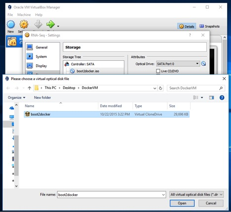
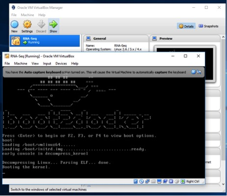
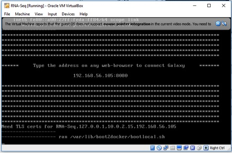

TED Virtual Machine (VM)¶
How to run the TED toolkit Virtual Machine (VM) Application
Pre-requisites¶
Download VirtualBox: http://www.virtualbox
Setting up TED VM Application¶
Select Appliance on VM¶

Import Appliance on VM¶

TED Appliance settings for import on VM¶

TED Appliance Importing on VM¶

TED Appliance Settings on VM¶
Go to Settings¶

System Requirements¶
Open virtual disk file for TED Appliance on VM



Connecting TED Appliance on VM¶
Go to Settings¶
Broad casted Galaxy instance IP address¶
Web Browser connection of Galaxy instance on VM¶